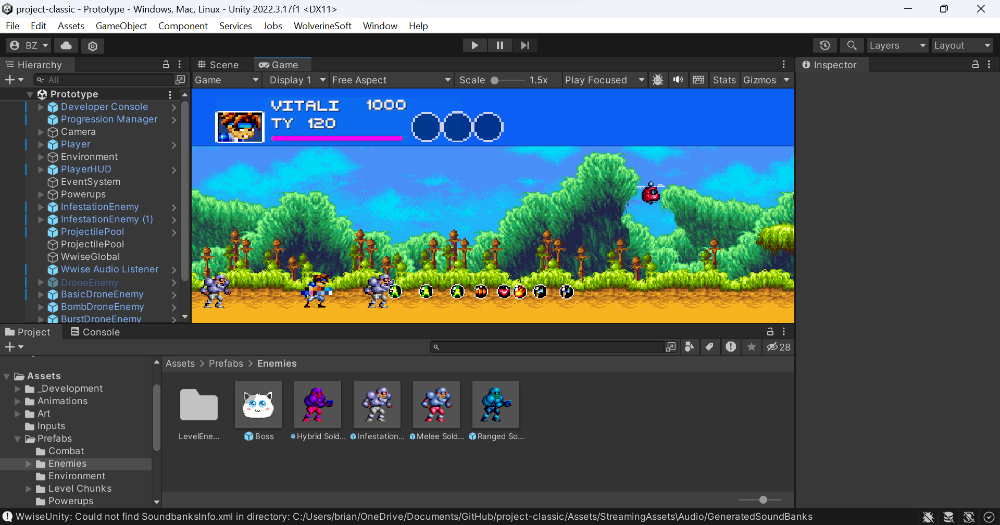
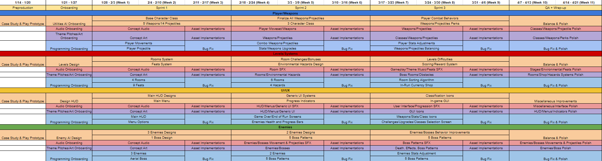

QA 1 + Sprint 2
Production Sync-up Meeting
The production sync-up meeting was organized to provide updates from each department on their progress with tools such as Jira, Confluence, and Unity Hub editor. The lead producer shared information about upcoming events, which, while not mandatory, were recommended for attendance. These events include lead mentorship sessions, workshop sessions, playtesting sessions, and more. Additionally, updates on departmental progress and the agenda for the upcoming Sunday studio meeting were discussed.
Leads Meeting
The lead meeting focused on discussing new ideas from designer directors, perspectives from programmer directors on implementing changes, updates on art and audio assets from the respective directors, and the overarching theme and narratives of the games. High-priority tasks and issues were identified for implementation to enhance general gameplay. Discussions also revolved around whether certain features were included in the prototype, the project's scope, and any dependencies between departments for feature integration.
Studio-wide Meeting
During the first Quality Assurance week, a playtest session was conducted using the latest build uploaded to Confluence. The team identified bugs and glitches in the prototype, discussing whether they were incorrect or correct behaviors. This process allowed the QA team to log these observations into the feedback tracker Google sheet, facilitating tracking and resolution by the programming, quality assurance, and production teams.
Organizing Playtest Feedback Tracker
The initial responsibility of the quality assurance team was to detail bugs in the Google sheet. Producers then organized this information, modifying sections such as the original issue text, reporting source, playtest reporter, and other relevant details. This organization made it easier to add issues to Jira, where programming directors could assign them for resolution.
Art and Audio Asset List
Producers are tasked with updating the art asset list, including names, types, and other details, and creating Jira tasks for them. Art directors oversee this process, adding additional details like sprint assignments and estimations. The audio asset list follows a similar process, with modifications needed for asset ID, name, time estimates, and other details. The art director also oversees this process, deciding on sprint tasks.
Logging and Updating Tasks on Jira
The process of logging and updating tasks on Jira involves reviewing design documents, playtesting, conducting squad meetings, and completing a task breakdown implementation documentation. This thorough process helps in identifying bugs from playtests and new programming implementations needed for gameplay improvements.
Playtesting Project Classic Prototype
The prototype build includes various game modes for testing weapons, drones, soldier enemies, and player interactions with obstacles and bosses. The playtest aims to assess the consistency of enemy behaviors and the functionality of different game modes to identify any bugs or issues that need addressing.



Task Breakdown Implementation Questions Documentation
This section outlines the process of documenting design presentations, enemy and boss design documentation, and notes on gameplay elements such as room stages, enemy types, and progression mechanics. It also includes questions and answers related to enemy behaviors, environmental hazards, and game progression strategies.

Mid-week Update Checkup
A midweek update was communicated to the squad via a discord channel, encouraging team members to share their progress, plans, and any obstacles they faced. This check-in aimed to foster transparency and collaboration within the team, ensuring everyone was aligned and aware of the project's status.
Hours Breakdown
QA 1
- Production Sync-up Meeting (30 minutes)
- Leads Meeting (1 hour)
- Studio-wide Meeting (2 hours 15 minutes)
- Studio Announcements: 11:00 AM ~ 11:20 AM (10 mins)
- Project Announcements: 11:20 AM ~ 11:30 AM (20 mins)
- Squad Meeting: 11:30 AM ~ 12:15 PM (45 mins)
- Department Meeting: 12:15 PM ~ 1:15 PM (60 mins)
- Organizing Playtest Feedback Tracker (1 hour 30 mins)
- Art and Audio Asset List (1 hour 15 mins)
- Logging and Updating Tasks on Jira (1 hour 30 mins)
- Playtesting Project Classic Prototype (1 hour)
Start of Sprint 2
- Production Sync-up Meeting (30 minutes)
- Leads Meeting (1 hour)
- Studio-wide Meeting (2 hours 15 minutes)
- Studio Announcements – 11:00 AM ~ 11:20 AM (10 mins)
- Project Announcements – 11:20 AM ~ 11:30 AM (20 mins)
- Squad Meeting – 11:30 AM ~ 12:15 PM (45 mins)
- Department Meeting – 12:15 PM ~ 1:15 PM (60 mins)
- Task Breakdown Implementation Questions Documentation (1 hour)
- Organizing Playtest Feedback Tracker (1 hour 15 mins)
- Logging and Updating Tasks on Jira (1 hour 30 mins)
- Midweek Update Checkup (45 minutes)
- Playtesting Project Classic Prototype (45 minutes)
Time Investment: 3 credits x 2 x 3 hours = 18 hours